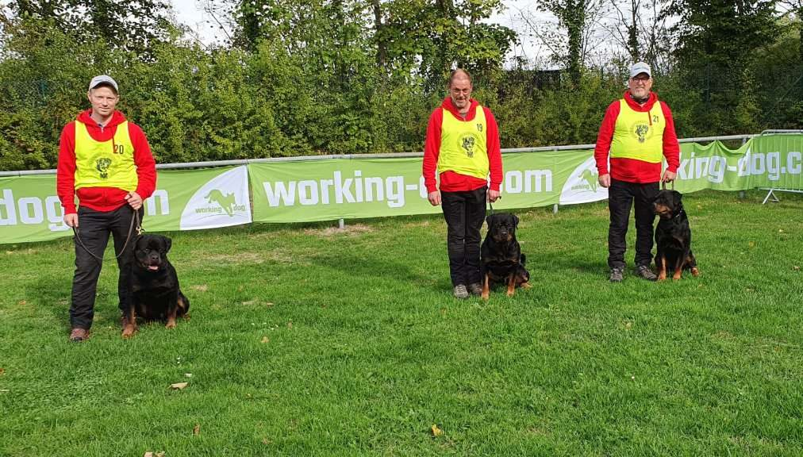
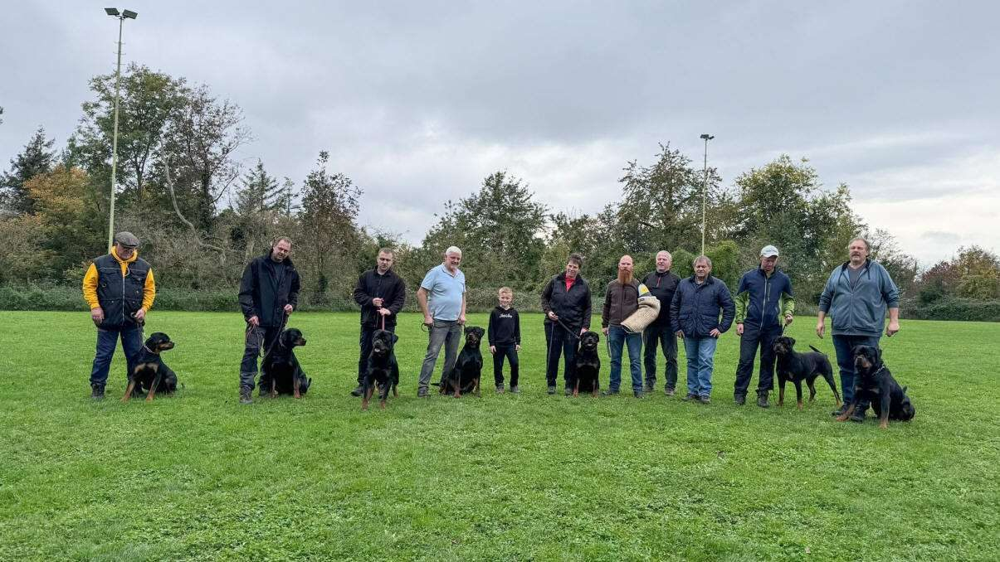
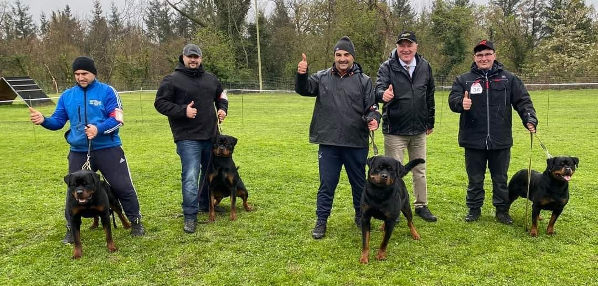
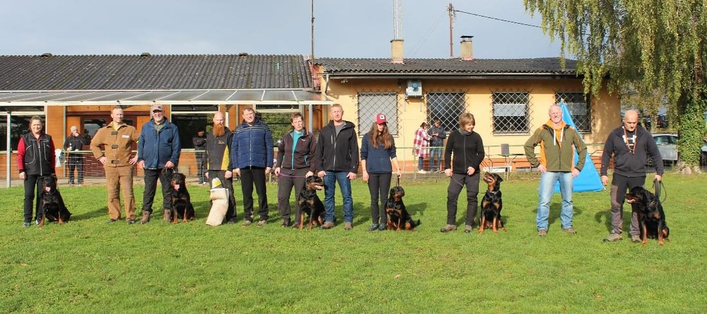
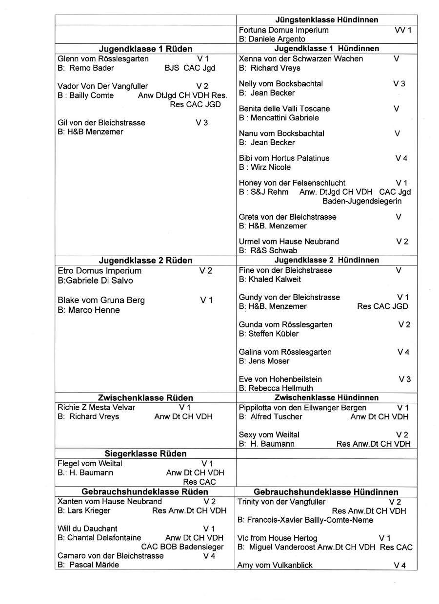
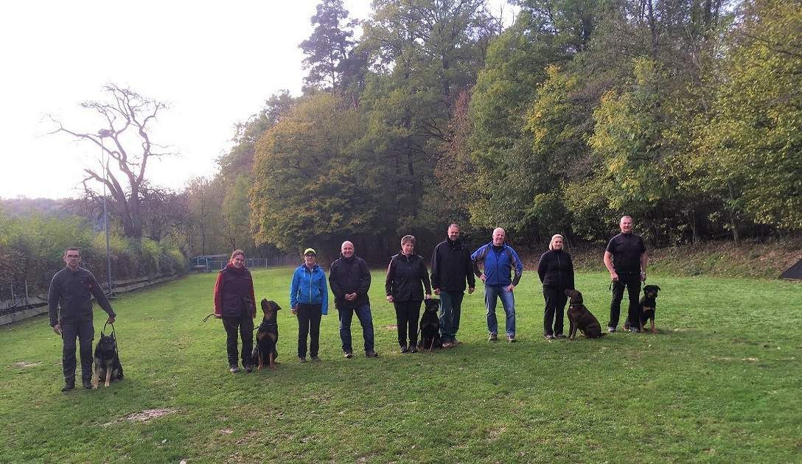
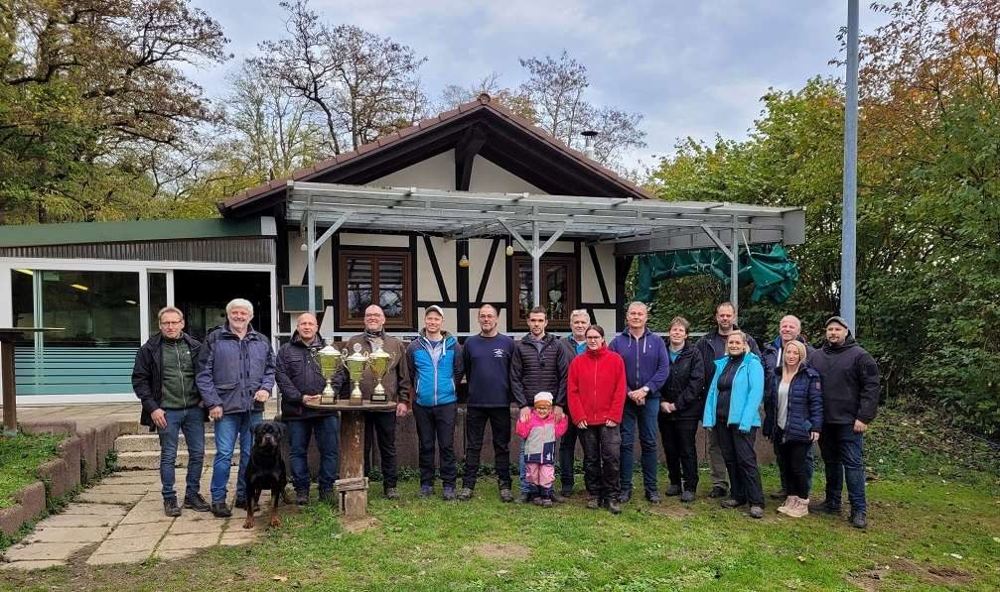
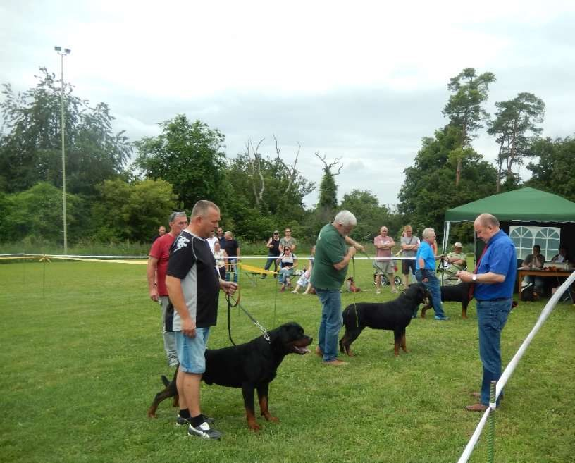
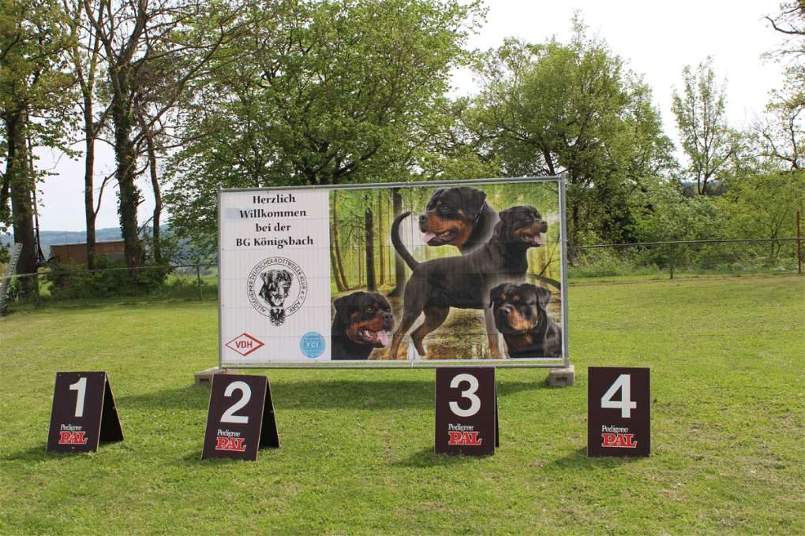

Ausbildung & Hundesport
Von der Begleithundeprüfung (BH/VT) bis zur IGP 3: Wir trainieren Unterordnung, Fährte und Schutzdienst – mit erfahrenen Ausbildern und Helfern.

Bezirksgruppe im Allgemeinen Deutschen Rottweiler-Klub
Ausbildung, Prüfungen, Zucht und Gemeinschaft. Ob erfahrener Hundeführer oder frisch mit Welpe: Komm einfach dienstags auf den Platz.
Was wir machen

Von der Begleithundeprüfung (BH/VT) bis zur IGP 3: Wir trainieren Unterordnung, Fährte und Schutzdienst – mit erfahrenen Ausbildern und Helfern.

Wir richten Zuchttauglichkeitsprüfungen (ZTP) aus und veranstalten jedes Jahr die Badenschau – 2024 bereits zum 40. Mal mit 66 gemeldeten Rottweilern.

Hinter jeder Prüfung stehen Fährtenleger, Helfer, Küche und Theke. Bei uns packt jeder mit an – und danach sitzt man zusammen.
Neu hier?
Du brauchst keine Anmeldung und keinen Rottweiler-Stammbaum. Schau einfach vorbei.
Dienstags ab 18:30 Uhr auf unserer Platzanlage. Gerne vorher kurz Bescheid geben.
Zuschauen, Fragen stellen, mit Hund oder ohne. Unser Ausbildungswart zeigt dir, wie das Training abläuft.
Wenn's passt, wirst du Mitglied in der BG und im ADRK – und trainierst regelmäßig mit.
Kalender
Platzhalter – die Termine für 2027 trägt der Verein noch ein.
ab 18:30 Uhr · Platzanlage Königsbach-Stein · Gäste willkommen
BH/VT und IGP 1–3 · Datum folgt
Zuchtschau für Rottweiler · Datum folgt
Datum folgt
BH/VT und IGP 1–3 · Datum folgt
Aus dem Verein

Alle Platzierungen aus Jugend-, Zwischen- und Gebrauchshundklasse auf einen Blick.

Bei bestem Frühlingswetter starteten 9 Teams – darunter zwei Gasthundeführer aus Italien. Bestes Ergebnis: IGP 3 mit 278 Punkten.

Tagessiegerin wurde Verena Sulzer mit Jaska vom Weiltal (276 Punkte) – inklusive bestem Schutzdienst mit 94 Punkten.
Über uns
Die Bezirksgruppe Königsbach wurde am 4. Oktober 1988 gegründet und am 2. Januar 1989 vom Allgemeinen Deutschen Rottweiler-Klub (ADRK) anerkannt.
Unser Zuhause ist die Platzanlage des VdH Königsbach im Steidig. Dort trainieren wir wöchentlich und richten Zuchttauglichkeitsprüfungen, IGP-Leistungsprüfungen und die jährliche Badenschau aus.

Ansprechpartner
Fragen zu Training, Zucht oder Mitgliedschaft? Schreib uns – wir melden uns.
E-Mail an den Vorstand